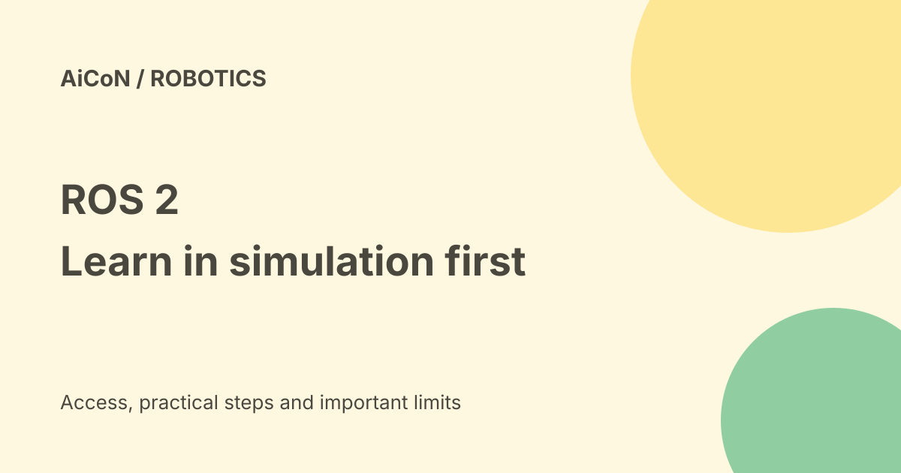

ROS 2: current LTS, beginner setup and real-robot limits
ROS 2 is software for building robot applications, not a ready-made robot app. It helps programs exchange sensor information and commands. The current release team recommends Lyrical Luth on a Tier 1 platform for new users; existing courses and hardware may need a different supported release.

What is ROS 2?
Robot Operating System 2 is an open-source robotics software ecosystem. Despite the name, it is not a replacement for Windows or Linux. You install it on a supported operating system and use its tools and packages to build applications.
A node is a program doing one part of the job. Topics let nodes publish and receive data; services handle request-and-response work; actions handle longer tasks with feedback. A robot still needs suitable electronics, drivers, calibration and an application that decides what to do.
Which release is current?
The official release-team announcement says Lyrical Luth launched on 22 May 2026 and is an LTS release supported until May 2031. LTS means long-term support. The team recommends Lyrical on a Tier 1 platform for people new to ROS.
That changes the archive's blanket recommendation to start with Jazzy. A course, driver or existing project may still require an older supported distribution. Match the documentation to that exact distribution rather than mixing instructions from different versions.
Platform support is not identical everywhere
| Lyrical Tier 1 | Ubuntu 26.04 on amd64/arm64, Windows 11 with Visual Studio 2022 on amd64. |
|---|---|
| Tier 2 | RHEL 10 on amd64. |
| Tier 3 | Ubuntu 24.04, macOS, Debian Trixie and OpenEmbedded listed in the release announcement. |
Support tiers describe different levels of maintenance and testing. The statement that ROS runs on Ubuntu, Windows and macOS should not imply equally convenient binary installation on every version. Check the official installation page for the selected distribution and machine.
Is it free?
The ROS 2 repository is public and contains an Apache 2.0 license. Individual packages and dependencies can have their own licenses. Inspect those before distributing a product or combining third-party code.
A source license does not pay for a laptop, GPU, cameras, robot arm, maintenance or integration work. A simulation-only learning project can avoid much of the physical equipment cost. Commercial support, cloud systems and vendor tools are separate.
A beginner route
- Choose a supported distribution based on your operating system, course and required packages.
- Use its official installation instructions, not a command copied from an unrelated release.
- Start with beginner tutorials on nodes, topics, services and actions.
- Run small examples and inspect what messages each program sends.
- Move to a simulator and test failure cases before real hardware.
- For a physical robot, have qualified people review drivers, limits, emergency stops and safeguarding.
The official docs server returned an anti-bot page during this check. The release announcement and repository were readable, but this guide does not claim to have validated a complete installation command sequence. No software or robot was installed or operated.
India and college projects
ROS can be useful in a robotics lab, but it has a learning curve. Keep the project's software version, package list and hardware requirements in a written record. Ask your lab which combinations it already supports before changing a shared machine.
A working simulated demo does not prove a physical system is safe or reliable. AI-generated code also needs tests and human review before controlling motion.
Frequently asked questions
Is ROS 2 itself an operating system?
No. It runs on a supported operating system.
Should everyone replace Jazzy immediately?
No. Check existing dependencies and support first.
Was the linked archive video verified?
No. This guide relies on written official release material, not an uninspected video.
What changed since the earlier post?
This guide updates the LTS recommendation to Lyrical, explains support tiers and avoids treating every operating system or robot as equally supported.
Sources: Release-team announcement · Official installation route, anti-bot page during check · ROS2 repository. Checked 8 October 2026.